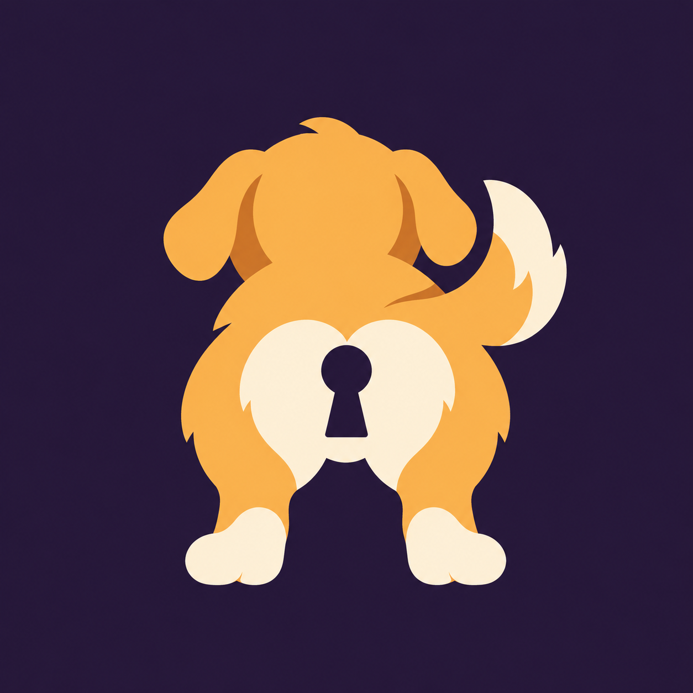
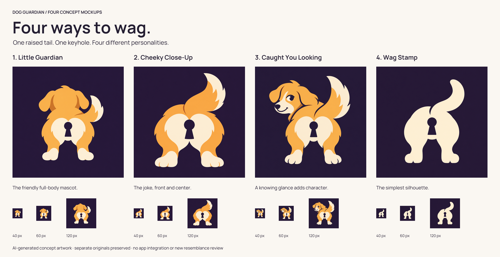
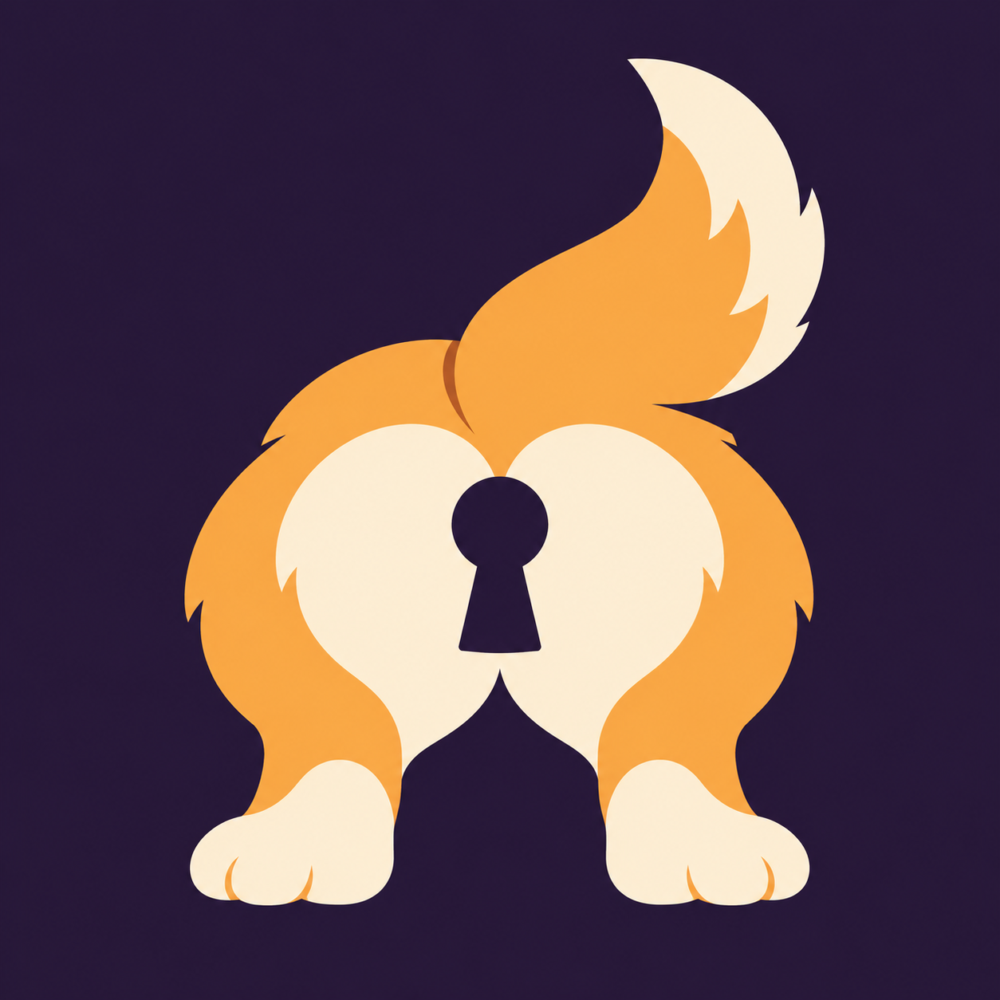
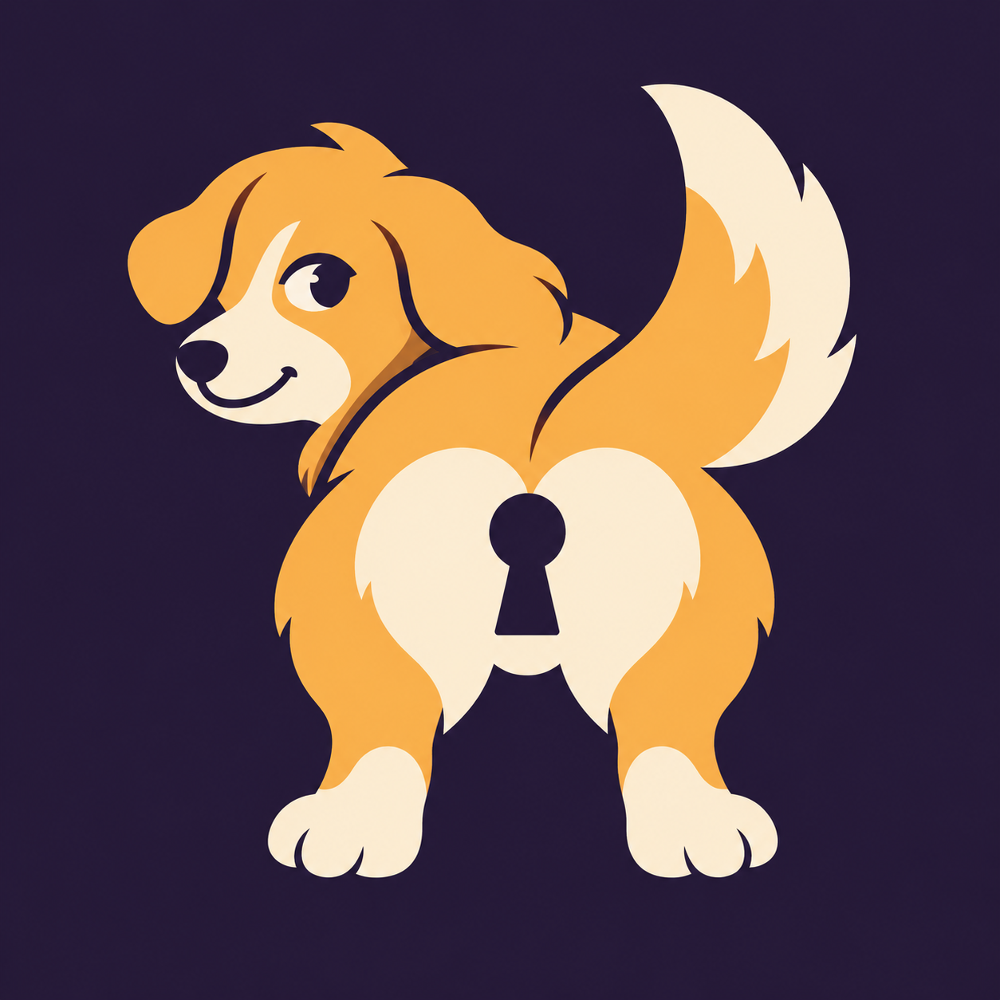
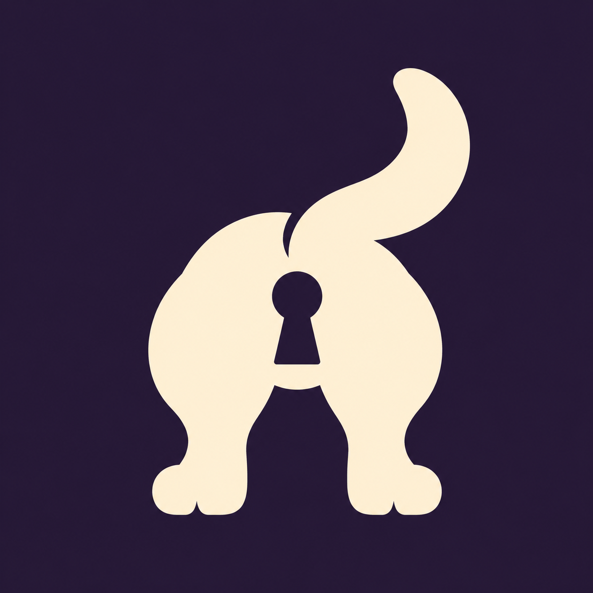

Little Guardian

The friendly full-body mascot.
Dog guardian concepts: a raised tail and keyhole, with four different personalities.


The friendly full-body mascot.

The joke, front and center.

A knowing glance adds character.

The simplest silhouette.
These are AI-generated raster sketches, not vector masters or cleared release artwork. The images retain some shading despite the flat-color brief. App artwork unchanged.